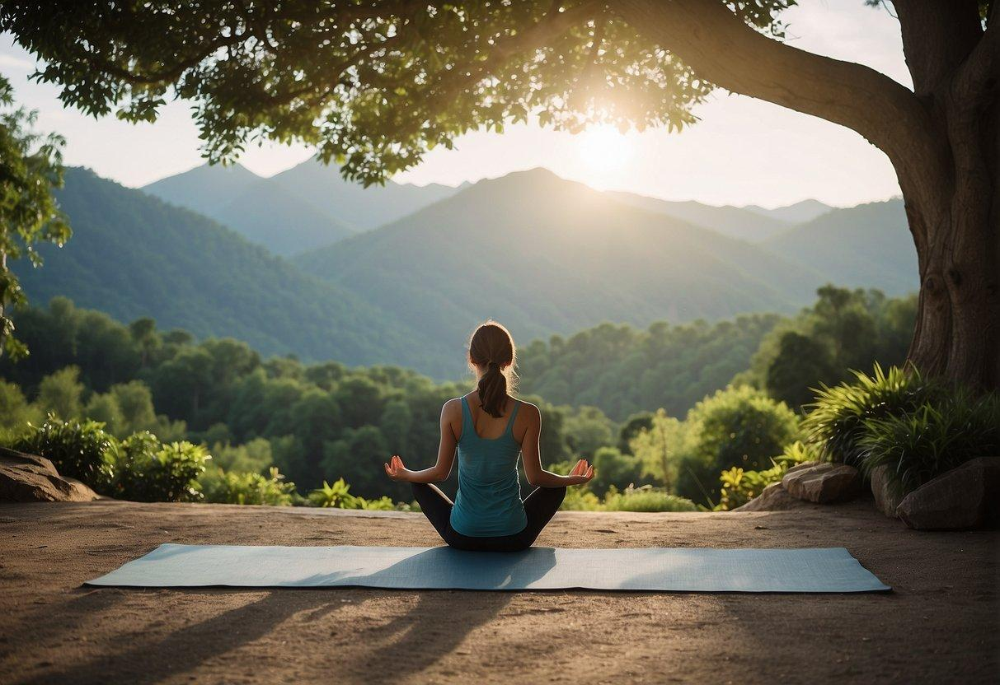
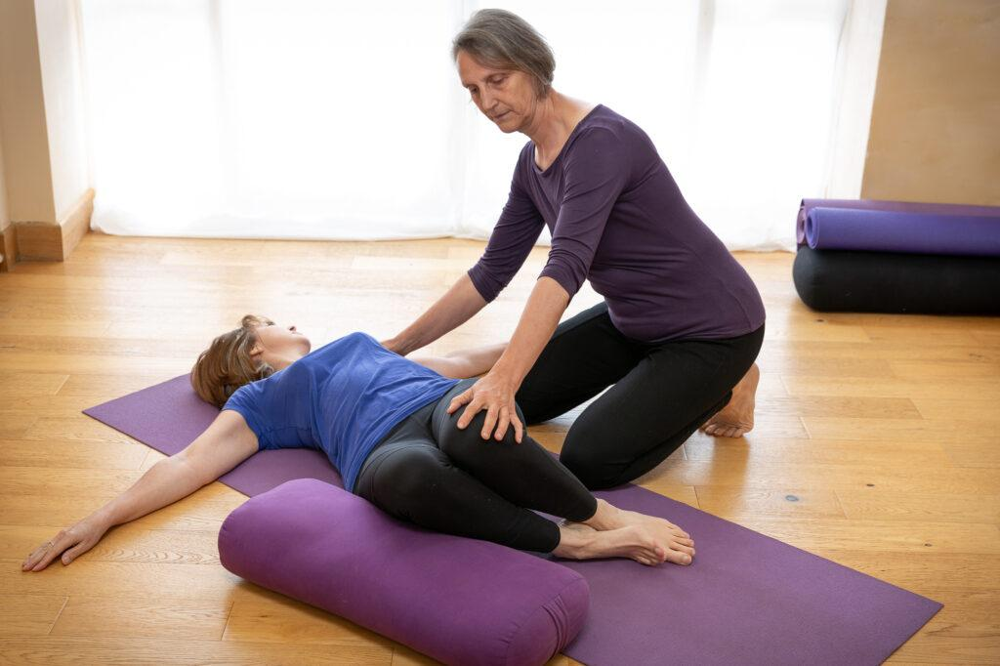
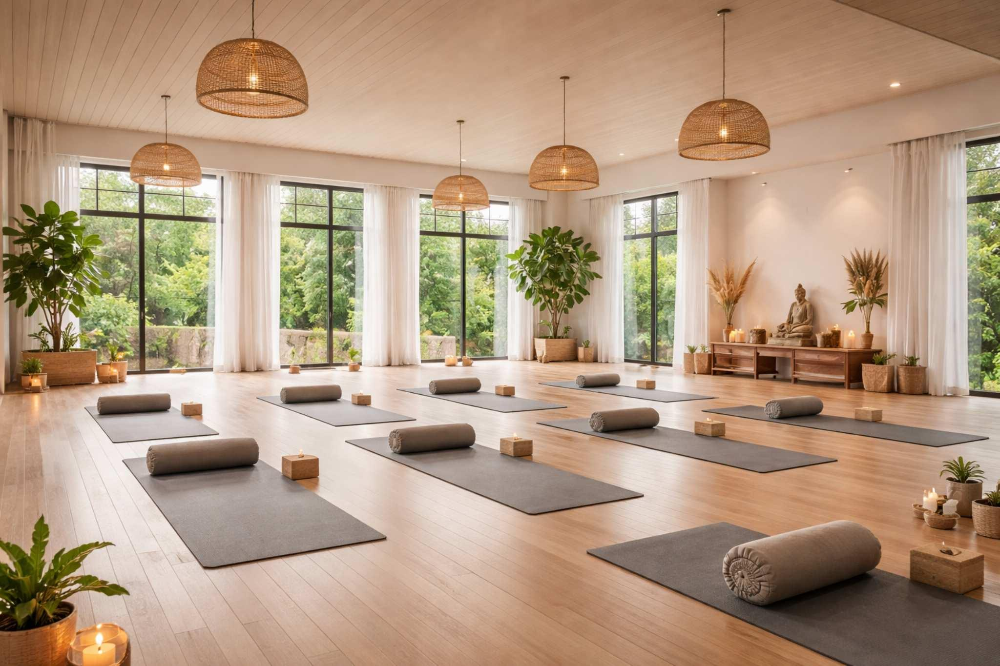
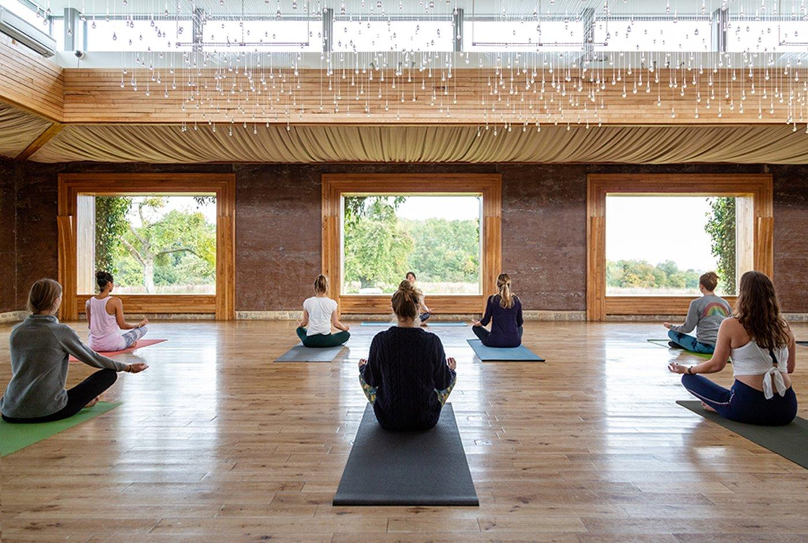
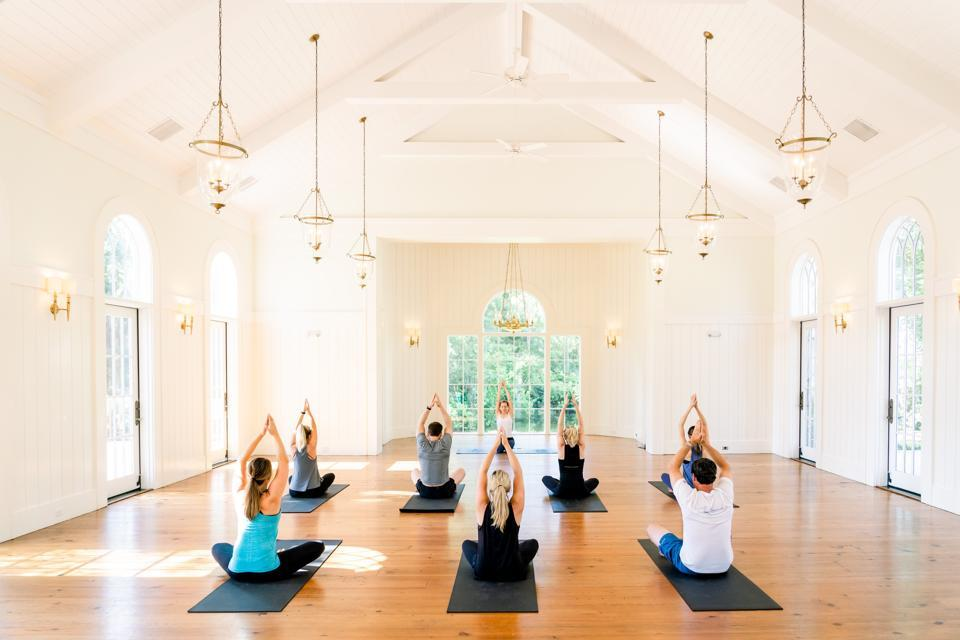
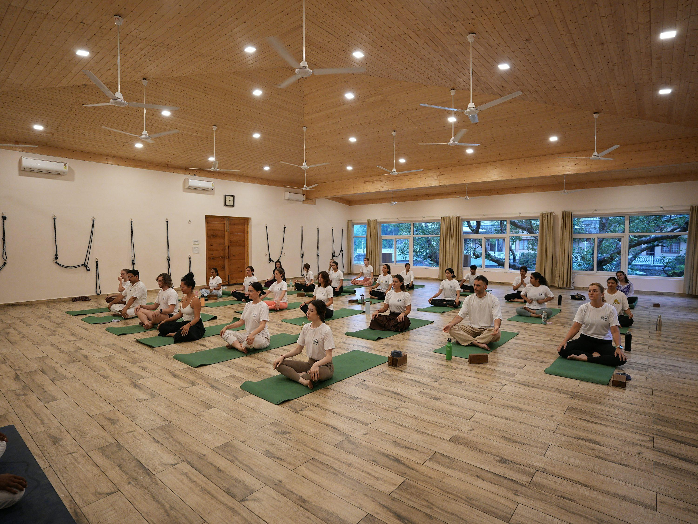
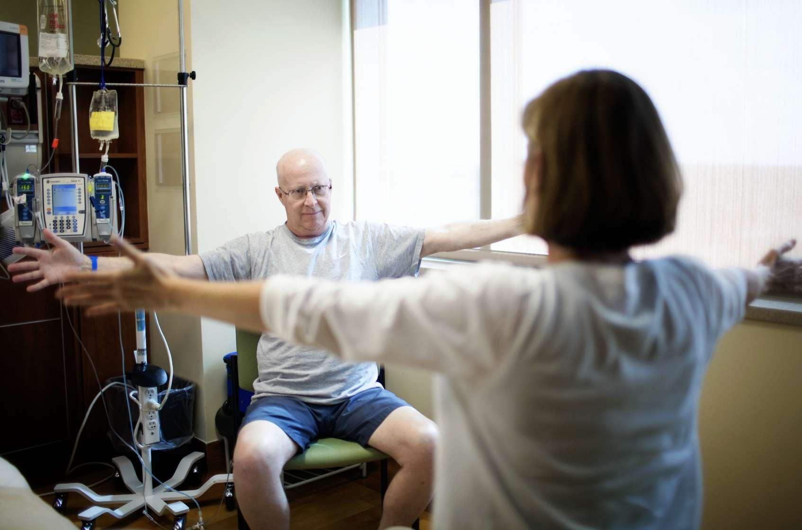

Verdant Life was founded on a simple yet profound conviction: human
vitality flourishes when we align our daily habits with nature's cyclical
rhythms. Nestled amidst tranquil foothills, our center provides an
authentic alternative to stressful, hurried environments.
Over a decade of committed natural healthcare, clinical ethics, and nature-cure research.

2012Acquisition of 40 acres of preserved biodynamic highlands. Planting over 200 indigenous medicinal botanical species to establish our sovereign living apothecary.

2016Inauguration of our dedicated elemental hydrotherapy and solar-cured mineral mud pavilions, staffed by certified naturopathic doctors.
 2020
2020
Completion of our cathedral-ceiling timber yoga hall engineered with acoustic sound buffers and panoramic dawn-facing sunrise terraces.

2026Launch of our secure patient portal, accredited residency fellowships, and synchronized circadian lifestyle programs for lasting health.
In a world dominated by constant digital urgency and synthetic quick-fixes, Verdant Life offers unhurried clinical care. We believe that true healing cannot be rushed. By blending the foundational tenets of Indian nature cure, classical yoga therapy, and wholesome plant-forward culinary nutrition, we create an atmosphere where the nervous system can safely exhale.

Pillar 01Set within clean microclimates filled with living botanical flora, providing oxygen-dense air that clears physical fatigue.

Pillar 02Expansive vaulted ceilings, timber acoustic panels, and warm earthen tones designed to calm over-stimulated minds.

Pillar 03A compassionate, non-judgmental community where practitioners of all mobility levels and ages practice with dignity.

Pillar 04Qualified naturopathic clinicians screen every patient to adapt yoga postures, thermal baths, and nutrition plans safely.
Every space at Verdant Life is purposefully engineered to eliminate sensory exhaustion and accelerate biological healing.
All therapy suites and meditation chambers incorporate triple-glazed acoustic windows and natural timber baffles, filtering out modern environmental decibel fatigue so your nervous system can smoothly disengage sympathetic defense.
Finished exclusively in breathable lime plaster, beeswax-rubbed reclaimed teak, and zero-VOC mineral pigments. Rooms remain completely free of synthetic outgassing, ensuring hypoallergenic, uncompromised respiratory comfort.
Skylight apertures maximize dawn and midday natural ultraviolet lux. At sunset, automated low-angle amber lighting (2200K) eliminates blue-light spectrums, shielding your pineal gland's natural evening melatonin synthesis.
Subterranean earth tubes gently condition incoming air without artificial refrigerants. 100% of rainwater is harvested and UV-purified for our hydrotherapy balneology pools and medicinal organic botanical beds.
At Verdant Life, we pride ourselves on clinical honesty. We do not make sensationalized promises, claim to "cure" incurable ailments, or guarantee clinical miracles. Instead, we offer time-tested lifestyle medicine, therapeutic movement, and natural therapies designed to nurture your body’s natural vitality, restore healthy daily rhythms, and alleviate stress.